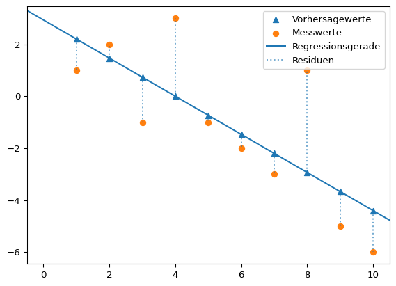

import numpy as np
import numpy.polynomial.polynomial as poly
import matplotlib.pyplot as plt1 Einleitung
Experiementell gewonnene Daten können stark verrauscht sein oder die Beziehung der Veriablen wird am besten durch einen nicht-linearen Zusammenhang beschrieben. Datenfitting ist der Prozess, ein Modell an einen Datensatz anzupassen, um die zugrundeliegende Beziehung zwischen den Variablen zu beschreiben, die Daten zu glätten oder Werte zwischen den vorhandenen Datenpunkten zu schätzen. Das Ziel dieses Prozesses ist es, eine Funktion zu finden, die den Datensatz so gut wie möglich beschreibt, indem die Abweichung zwischen dem Modell und den tatsächlichen Daten minimiert wird. Man nennt diesen Prozess auch Modellierung.
In diesem Baustein werden die folgenden Module verwendet:
Die Modellierung von Daten kann auf folgendes Problem verallgemeinert werden:
- Gegeben sind \(n\) Messpunktpaare \((x_i, y_i)\) mit \(x_i, y_i \in \mathbb{R}\).
- Gesucht ist eine Modellfunktion \(y(x)\), welche die Messpunktpaare approximiert.
Ein möglicher Ansatz ist die Darstellung der Modellfunktion als Summe von \(m\) Basisfunktionen \(\phi_i(x)\) mit den Koeffizienten \(\beta_i\). \[ y(x) = \sum_{i=1}^{m}\beta_i \cdot \phi_i(x) = \beta_1\cdot \phi_1(x) + \cdots + \beta_m\cdot \phi_m(x) \]
Die Koeffizienten \(\beta_i\) müssen dabei so bestimmt werden, dass \(y(x)\) so gut wie möglich – oder gar exakt – die Messpunkte approximiert.
Als Abstandmaß zwischen einer Modellfunktion und den Messpunkten kann die Methode der kleinsten Quadrate genutzt werden.
Beispiel 1.2: Methode der kleinsten Quadrate
Mit der Methode der kleinsten Quadrate soll diejenige Gerade \(\hat{y} = \beta_0 + \beta_1 \cdot x\) gefunden werden, die die quadrierten Abstände der Vorhersagewerte \(\hat{y}\) von den tatsächlich gemessenen Werten \(y\) minimiert. Die Werte \(y_i - \hat{y_i}\) sind die Residuen \(e_i\). Es gilt also:
\[ \sum_{i=1}^{N}(y_i - \hat{y_i})^2 = \sum_{i=1}^{N} e_i = \min \]
Grafisch kann man sich die Minimierung der quadrierten Abstände so vorstellen.

Regressionskoeffizienten: [ 2.93333333 -0.73333333]x = np.arange(1, 11)
y = - x.copy() + 4
y[0] -= 2
y[2] -= 2
y[3] += 3
y[-3] += 5
lm = poly.polyfit(x, y, 1)
vorhersagewerte = poly.polyval(x, lm)
plt.scatter(x, vorhersagewerte, label = 'Vorhersagewerte', marker = "^", color = "tab:blue")
plt.scatter(x, y, label = 'Messwerte', marker = 'o', color = "tab:orange")
plt.axline(xy1 = (0, lm[0]), slope = lm[1], label = "Regressionsgerade", color = "tab:blue")
dotted = plt.vlines(x, ymin = vorhersagewerte, ymax = y, alpha = 0.6, ls = 'dotted', label = 'Residuen')
plt.legend()
plt.show()
print("Regressionskoeffizienten:", lm)
Die eingezeichnete Gerade entspricht der linearen Funktion \(\hat{y} = \beta_0 + \beta_1 \cdot x + e_i\). Die Dreiecksmarker sind die Vorhersagewerte \(\hat{y_i}\) des linearen Modells für die Werte \(x_i = np.arange(1, 11)\). Die tatsächlichen Messwerte \(y\) sind mit Kreismarkern markiert. Die Länge der gestrichelten Linien entspricht der Größe der Abweichung zwischen den Mess- und Vorhersagewerten \(y_i - \hat{y_i}\), also den Residuen \(e_i\).
Gesucht wird diejenige Gerade, die die Summe der quadrierten Residuen minimiert. Die gesuchten Werte \(\beta_0\) und \(\beta_1\) sind die Kleinst-Quadrate-Schätzer.
\[ \beta_0 = \bar{y} - \beta_1 \cdot \bar{x} \]
\[ \beta_1 = { \sum_{i=1}^n (x_i- \bar{x}) \cdot (y_i - \bar{y}) \over \sum_{i=1}^n (x_i - \bar{x})^2 } \]
Der Vollständigkeit halber leiten wir die Kleinst-Quadrate-Schätzer her. Gesucht werden Werte für \(\beta_0\) und \(\beta_1\), damit die Summe der Residuenquadrate \(\sum_{i=1}^{n} e_i^2\) möglichst klein wird. Die Residuenquadratsumme ist die Summe der quadrierten Differenzen aus beobachteten Werten \(y_i\) und der durch die lineare Funktion vorhergesagten Werte. \[ \sum_{i=1}^{n} e_i^2 ~ = ~ \sum_{i=1}^{n} (y_i - (\beta_0 + \beta_1 \cdot x_i))^2 \]
Wir untersuchen also eine Funktion, die von zwei Variablen abhängig ist. \[ f(\beta_0, \beta_1) = \sum_{i=1}^{n} (y_i - (\beta_0 + \beta_1 \cdot x_i))^2 \]
Das Summenzeichen ist die Kurzschreibweise für eine Summe. \[ f(\beta_0, \beta_1) = (y_1 - (\beta_0 + \beta_1 \cdot x_1))^2 ~ + ~ (y_2 - (\beta_0 + \beta_1 \cdot x_2))^2 ~ + ~ ... ~ (y_n - (\beta_0 + \beta_1 \cdot x_n))^2 \]
Im Minimum der Funktion müssen die beiden partiellen Ableitungen gleich Null sein (Warum das so ist, wird hier leicht verständlich erklärt.)
Beispiel 1.1: Partielle Ableitung
Die partielle Ableitung ist die Ableitung einer Funktion mit mehreren Variablen nach einer Variablen, wobei die übrigen Variablen als Konstanten behandelt werden.
Für eine Funktion \(f(x, y) = 2x + y^2\) wird die partielle Ableitung nach x so ausgedrückt:
\(\frac{\partial f(x, y)}{\partial x}\)
- Das Symbol ∂ ist die kursive Darstellung des kyrillischen Kleinbuchstaben д (d) und wird als “del” gelesen. Es zeigt an, das eine partielle Ableitung durchgeführt wird.
- Im Zähler steht die Funktion, die abgeleitet werden soll. Im Nenner steht die Variable nach der abgeleitet wird. Der Term wird gelesen als “del f von x und y nach del x”.
Die partielle Ableitung \(\frac{\partial f(x, y)}{\partial x} = 2\). \(y^2\) wird als Konstante behandelt (z. B. \(5^2\) ) und ist abgeleitet Null.
Die partielle Ableitung \(\frac{\partial f(x, y)}{\partial y} = 2y\). \(2x\) wird als Konstante behandelt (z. B. \(2 \cdot 3\) ) und ist abgeleitet Null.
In beiden partiellen Ableitungen sind \(x_i\) und \(y_i\) konstant. In der partiellen Ableitung nach \(\beta_0\) ist außerdem \(\beta_1\) konstant, in der partiellen Ableitung nach \(\beta_1\) ist entsprechend \(\beta_0\) konstant.
Für die partielle Ableitung nach \(\beta_0\) gilt also nach der Kettenregel für die äußere Funktion (oben) und die innere Funktion (Mitte): \[ \begin{aligned} \frac{\partial f(\beta_0, \beta_1)}{\partial \beta_0} = 2 \cdot (y_1 - (\beta_0 + \beta_1 \cdot x_1)) ~ + ~ ... ~ (y_n - (\beta_0 + \beta_1 \cdot x_n)) = 2 \cdot \sum_{i=1}^{n} (y_i - (\beta_0 + \beta_1 \cdot x_i)) ~ \cdot \newline (0 - (1 + 0 \cdot 0)) ~ + ~ ... ~ (0 - (1 + 0 \cdot 0)) = \sum_{i=1}^{n} (0 - (1 + 0 \cdot 0)) = \newline 2 \cdot \sum_{i=1}^{n} (y_i - (\beta_0 + \beta_1 \cdot x_i)) ~ \cdot (-1) \end{aligned} \]
Für die partielle Ableitung nach \(\beta_0\) gilt also: \[ \frac{\partial f(\beta_0, \beta_1)}{\partial \beta_0} = -2 \cdot \sum_{i=1}^{n} (y_i - (\beta_0 + \beta_1 \cdot x_i)) = 0 \]
Diese kann vereinfacht werden, indem der Vorfaktor \(-2\) entfällt (weil \(-2 \cdot 0 = 0\) gelten muss) und die Vorzeichen aufgelöst werden. Sodass: \[ \sum_{i=1}^{n} (y_i - \beta_0 - \beta_1 \cdot x_i) = 0 \]
Man kann auch schreiben: \[ \sum_{i=1}^{n} y_i - \sum_{i=1}^{n} \beta_0 - \sum_{i=1}^{n} \beta_1 \cdot x_i = 0 \]
\(\beta_0\) und \(\beta_1\) sind Konstanten, sodass gilt \(\sum_{i=1}^{n} \beta_0 = \beta_0 \cdot \sum_{i=1}^{n} 1 = \beta_0 \cdot n\) und \(\sum_{i=1}^{n} \beta_1 \cdot x_i = \beta_1 \cdot \sum_{i=1}^{n} 1 \cdot x_i\). So gilt: \[ \sum_{i=1}^{n} y_i - n \cdot \beta_0 - \beta_1 \cdot \sum_{i=1}^{n} x_i = 0 \]
Jetzt kann man durch \(n\) teilen. Dabei entspricht \(\frac{\sum_{i=1}^{n}y_i}{n}\) dem arithmetischen Mittelwert von \(y\) und \(\frac{\sum_{i=1}^{n}x_i}{n}\) dem arithmetischen Mittelwert von \(x\). Somit steht: \[ \bar{y} - \beta_0 - \beta_1 \cdot \bar{x}= 0 \]
Umgestellt: \[ \beta_0 = \bar{y} - \beta_1 \cdot \bar{x} \]
Für die partielle Ableitung nach \(\beta_1\) ist ebenfalls die Kettenregel anzuwenden, sodass die äußere Funktion (oben) identisch abgeleitet wird: \[ \begin{aligned} \frac{\partial f(\beta_0, \beta_1)}{\partial \beta_1} = 2 \cdot (y_1 - (\beta_0 + \beta_1 \cdot x_1)) ~ + ~ ... ~ (y_n - (\beta_0 + \beta_1 \cdot x_n)) = 2 \cdot \sum_{i=1}^{n} (y_i - (\beta_0 + \beta_1 \cdot x_i)) ~ \cdot \newline (0 - (0 + 1 \cdot x_1)) ~ + ~ ... ~ (0 - (0 + 1 \cdot x_n)) ~ = ~ \sum_{i=1}^{n} -x_i = \newline 2 \cdot \sum_{i=1}^{n} (y_i - (\beta_0 + \beta_1 \cdot x_i)) ~ \cdot -x_i \end{aligned} \]
Für die partielle Ableitung nach \(\beta_1\) gilt also: \[ \frac{\partial f(\beta_0, \beta_1)}{\partial \beta_1} = -2 \sum_{i=1}^{n} x_i \cdot (y_i - (\beta_0 + \beta_1 \cdot x_i)) = 0 \]
Auch diese kann vereinfacht werden, indem der Vorfaktor \(-2\) entfällt (weil \(-2 \cdot 0 = 0\) gelten muss) und die Vorzeichen aufgelöst werden. Außerdem kann ausmultipliziert werden: \[ \sum_{i=1}^{n} x_iy_i - \sum_{i=1}^{n} \beta_0 \cdot x_i - \sum_{i=1}^{n} \beta_1 \cdot x_ix_i = 0 \]
Wieder können die Konstanten herausgezogen werden: \[ \sum_{i=1}^{n} x_iy_i - \beta_0 \cdot \sum_{i=1}^{n} x_i - \beta_1 \cdot \sum_{i=1}^{n} x_ix_i = 0 \]
Jetzt kann man \(\beta_0 = \bar{y} - \beta_1 \cdot \bar{x}\) und \(\sum_{i=1}^{n} x_i = n \cdot \bar{x}\) einsetzen: \[ \sum_{i=1}^{n} x_iy_i - (\bar{y} - \beta_1 \cdot \bar{x}) \cdot n \cdot \bar{x} - \beta_1 \cdot \sum_{i=1}^{n} x_ix_i = 0 \]
Der mittlere Term wird ausmultipliziert und \(x_ix_i\) im letzten Term als \(x_i^2\) geschrieben: \[ \sum_{i=1}^{n} x_iy_i - n\bar{x}\bar{y} - \beta_1 \cdot n\bar{x}\bar{x} - \beta_1 \cdot \sum_{i=1}^{n} x_i^2 = 0 \]
Die letzten beiden Terme werden unter Anwendung des Distributivgesetzes \(a−b = − (b−a)\) zusammengefasst. \[ \sum_{i=1}^{n} x_iy_i - n\bar{x}\bar{y} - \beta_1 \cdot ( \sum_{i=1}^{n} x_i^2 - n \bar{x}^2) = 0 \]
Jetzt kann nach \(\beta_1\) umgestellt werden. Erst: \[ \beta_1 \cdot ( \sum_{i=1}^{n} x_i^2 - n \bar{x}^2) = \sum_{i=1}^{n} x_iy_i - n\bar{x}\bar{y} \]
Dann: \[ \beta_1 = \frac{\sum_{i=1}^{n} x_iy_i - n\bar{x}\bar{y}}{\sum_{i=1}^{n} x_i^2 - n \bar{x}^2} \]
Nun kann zuerst mit \(\sum_{i=1}^{n} x_i^2 - n \bar{x}^2 = \sum_{i=1}^{n} (x_i - \bar{x})^2\) umgeformt werden. \[ \beta_1 = \frac{\sum_{i=1}^{n} x_iy_i - n\bar{x}\bar{y}}{\sum_{i=1}^{n} (x_i - \bar{x})^2} \]
Dann - und das wird gleich gezeigt - mit \(\sum_{i=1}^{n} x_iy_i - n\bar{x}\bar{y} = \sum_{i=1}^{n} (x_i - \bar{x}) (y_i - \bar{y})\). Sodass steht: \[ \beta_1 = \frac{\sum_{i=1}^{n} (x_i - \bar{x}) (y_i - \bar{y})}{\sum_{i=1}^{n} (x_i - \bar{x})^2} \]
Der letzte Schritt wird ausgehend vom Ergebnis gezeigt und beginnt mit dem Ausmultiplizieren: \[ \sum_{i=1}^{n} (x_i - \bar{x}) (y_i - \bar{y}) = \sum_{i=1}^{n} (x_iy_i - x_i\bar{y} - \bar{x}y_i + \bar{x}\bar{y}) \]
Man kann auch schreiben: \[ \sum_{i=1}^{n} x_iy_i - \sum_{i=1}^{n} x_i\bar{y} - \sum_{i=1}^{n} \bar{x}y_i + \sum_{i=1}^{n} \bar{x}\bar{y} \]
\(\bar{x}\) und \(\bar{y}\) sind Konstanten, sodass \(\bar{x} \cdot \sum_{i=1}^{n} y_i\) und \(\bar{y} \cdot \sum_{i=1}^{n} x_i\) geschrieben werden kann. \(\sum_{i=1}^{n} x_i\) ist gleich \(n \cdot \bar{x}\) (analog für \(y\)). So ergibt sich:
\[ \sum_{i=1}^{n} x_iy_i - \bar{y} \cdot n \cdot \bar{x} - \bar{x} \cdot n \cdot \bar{y} + \sum_{i=1}^{n} \bar{x}\bar{y} \]
Sortieren: \[ \sum_{i=1}^{n} x_iy_i - n\bar{x}\bar{y} - n\bar{x}\bar{y} + \sum_{i=1}^{n} \bar{x}\bar{y} \]
Der letzte Term \(\sum_{i=1}^{n} \bar{x}\bar{y}\) kann auch \(n \cdot \bar{x}\bar{y}\) geschrieben werden, sodass sich ergibt: \[ \sum_{i=1}^{n} x_iy_i - n\bar{x}\bar{y} - n\bar{x}\bar{y} + n\bar{x}\bar{y} \]
Die letzten beiden Terme entfallen somit und es bleibt: \[ \sum_{i=1}^{n} x_iy_i - n\bar{x}\bar{y} \]
In diesem Kapitel werden folgende Verfahren für die Modellierung von Daten vorgestellt:
- die Polynominterpolation,
- Datenfitting durch Polynome und
- Datenfitting durch Splines.
Baitsch, Matthias. 2019. „Vorlesungsskript Mathematik B (Master) Stochastik“. Hochschule Bochum.